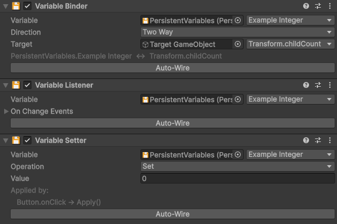
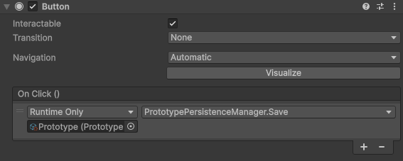
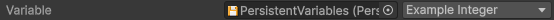

No-Code
Create a Persistent Variables asset
A PersistentVariables asset holds a
list of named values that the package saves and loads for you. To create one, select
Create > Persistent Asset > Persistent Variables in the Project window.
A row holds any of over 40 types, including any enum, Unity's serializable structs, a project asset, and lists and maps of those.

Variable components
Three components connect a variable to the rest of your scene:
- Variable Binder keeps a variable in sync with a target member.
- Variable Listener raises a UnityEvent when the variable changes.
- Variable Setter writes a new value into the variable from a UnityEvent.
To add one, drag a variable by the handle at the left of its row onto a GameObject, then select which of the three components to add.


Save and load from the Inspector
Two components put saving and loading on your own UI:
- Persistence Operation Control runs any operation, slots included.
- Persistence Operation Listener raises every event around an operation, plus ready, busy and the shutdown drain.

Persist input bindings and a locale
Two optional modules add an Input Binding and a Locale Identifier variable type, each with a static helper. A rebind screen and a language selector need code:
variables.ApplyBinding("Jump", jumpAction); // restore on startup
variables.RebindAndStore("Jump", jumpAction); // run a remap screen, then store
variables.ApplyLocale("Language"); // restore on startup
variables.SelectLocale("Language", new("fr")); // pick one from a dropdownReference a variable from a script
To read and write a variable's value from code, serialize a variable reference field, then drag a variable onto it:
[SerializeField] VariableValueRef<int> coins; // assigned in the inspector
[SerializeField] VariableListRef<string> unlockedSkins; // assigned in the inspector
coins.Value -= price;
unlockedSkins.List.Add("gold");
To add variable types, conversions and widgets of your own, refer to Add your own variable types.
Store values under keys of your own
Set creates a variable on the spot, under a key you choose:
variables.Set("gold", 120);
int gold = variables.Get("gold", 0); // the fallback stands in when missing
VariableList<string> inventory = variables.GetList<string>("inventory");
inventory.Add("sword");The key is what identifies the variable, so writing under a new key creates another variable rather
than renaming the first. Remove deletes the one you no longer want.
A variable authored in the Inspector window takes priority over a runtime one of the same key, from the next load on.
OnReloaded.